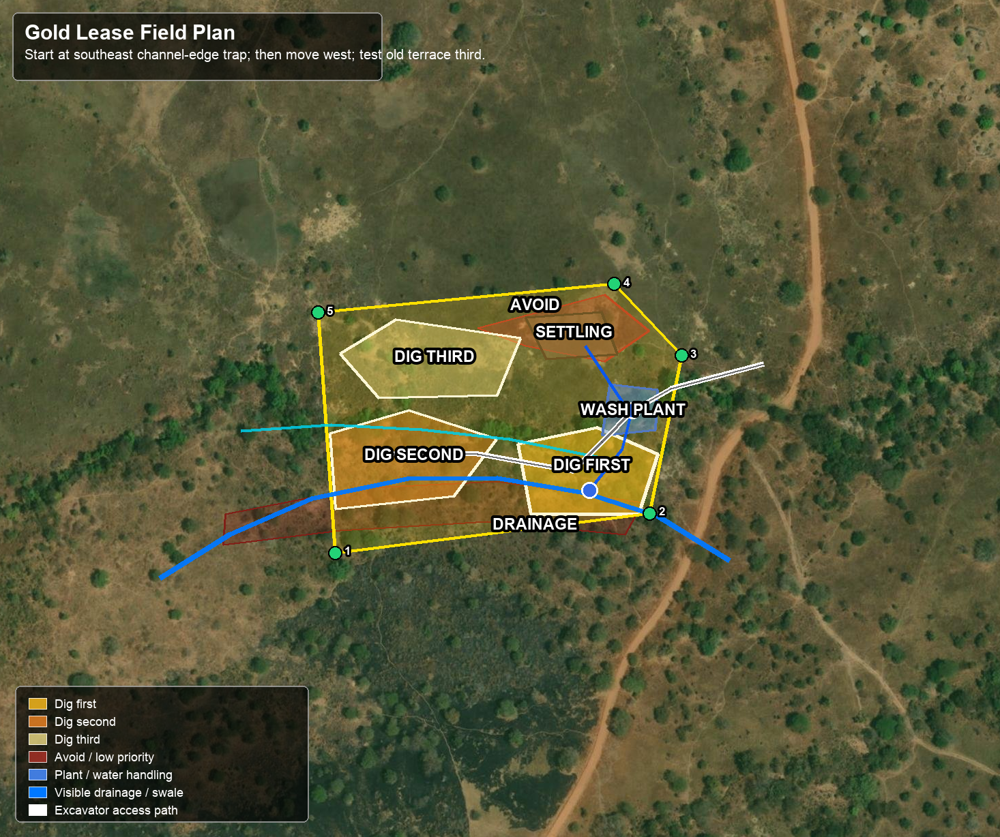

Where To Dig
Start in the yellow area.
Make one narrow cut. If it pays, widen there. If it is weak, move to orange. Leave red alone.
Yellow:
first cut
Orange:
next cut
Pale yellow:
last test
Red:
do not dig
